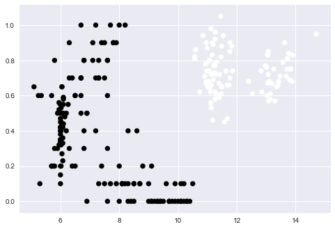
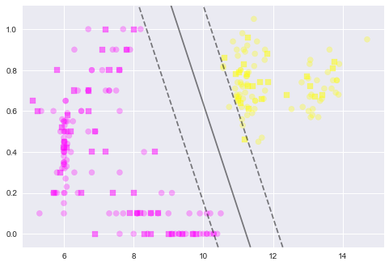
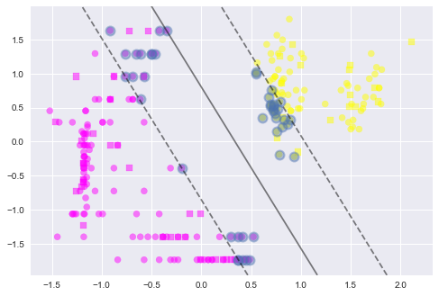

Models
#!pip install seaborn
%matplotlib inline
import numpy as np
import matplotlib.pyplot as plt
import pandas as pd
import seaborn as sns
pd.set_option('display.width', 500)
pd.set_option('display.max_columns', 100)
df = pd.read_csv("local-olives-cleaned.csv")
df.head()
| areastring | region | area | palmitic | palmitoleic | stearic | oleic | linoleic | linolenic | arachidic | eicosenoic | regionstring | |
|---|---|---|---|---|---|---|---|---|---|---|---|---|
| 0 | North-Apulia | 1 | 1 | 10.75 | 0.75 | 2.26 | 78.23 | 6.72 | 0.36 | 0.60 | 0.29 | South |
| 1 | North-Apulia | 1 | 1 | 10.88 | 0.73 | 2.24 | 77.09 | 7.81 | 0.31 | 0.61 | 0.29 | South |
| 2 | North-Apulia | 1 | 1 | 9.11 | 0.54 | 2.46 | 81.13 | 5.49 | 0.31 | 0.63 | 0.29 | South |
| 3 | North-Apulia | 1 | 1 | 9.66 | 0.57 | 2.40 | 79.52 | 6.19 | 0.50 | 0.78 | 0.35 | South |
| 4 | North-Apulia | 1 | 1 | 10.51 | 0.67 | 2.59 | 77.71 | 6.72 | 0.50 | 0.80 | 0.46 | South |
acidlist=['palmitic', 'palmitoleic', 'stearic', 'oleic', 'linoleic', 'linolenic', 'arachidic', 'eicosenoic']
dfsouth=df[df.regionstring=='South']
dfsouth.head()
| areastring | region | area | palmitic | palmitoleic | stearic | oleic | linoleic | linolenic | arachidic | eicosenoic | regionstring | |
|---|---|---|---|---|---|---|---|---|---|---|---|---|
| 0 | North-Apulia | 1 | 1 | 10.75 | 0.75 | 2.26 | 78.23 | 6.72 | 0.36 | 0.60 | 0.29 | South |
| 1 | North-Apulia | 1 | 1 | 10.88 | 0.73 | 2.24 | 77.09 | 7.81 | 0.31 | 0.61 | 0.29 | South |
| 2 | North-Apulia | 1 | 1 | 9.11 | 0.54 | 2.46 | 81.13 | 5.49 | 0.31 | 0.63 | 0.29 | South |
| 3 | North-Apulia | 1 | 1 | 9.66 | 0.57 | 2.40 | 79.52 | 6.19 | 0.50 | 0.78 | 0.35 | South |
| 4 | North-Apulia | 1 | 1 | 10.51 | 0.67 | 2.59 | 77.71 | 6.72 | 0.50 | 0.80 | 0.46 | South |
Predicting via SVM
dfnew=df[['eicosenoic', 'region', 'regionstring']]
dfnew['linoarch']=(0.969/1022.0)*df.linoleic + (0.245/105.0)*df.arachidic
dfnew.head()
| eicosenoic | region | regionstring | linoarch | |
|---|---|---|---|---|
| 0 | 0.29 | 1 | South | 0.007772 |
| 1 | 0.29 | 1 | South | 0.008828 |
| 2 | 0.29 | 1 | South | 0.006675 |
| 3 | 0.35 | 1 | South | 0.007689 |
| 4 | 0.46 | 1 | South | 0.008238 |
dfnosouth=df[df.regionstring!='South']
dfnosouth.head()
| areastring | region | area | palmitic | palmitoleic | stearic | oleic | linoleic | linolenic | arachidic | eicosenoic | regionstring | |
|---|---|---|---|---|---|---|---|---|---|---|---|---|
| 323 | Inland-Sardinia | 2 | 5 | 11.29 | 1.20 | 2.22 | 72.72 | 11.12 | 0.43 | 0.98 | 0.02 | Sardinia |
| 324 | Inland-Sardinia | 2 | 5 | 10.42 | 1.35 | 2.10 | 73.76 | 11.16 | 0.35 | 0.90 | 0.03 | Sardinia |
| 325 | Inland-Sardinia | 2 | 5 | 11.03 | 0.96 | 2.10 | 73.80 | 10.85 | 0.32 | 0.94 | 0.03 | Sardinia |
| 326 | Inland-Sardinia | 2 | 5 | 11.18 | 0.97 | 2.21 | 72.79 | 11.54 | 0.35 | 0.94 | 0.02 | Sardinia |
| 327 | Inland-Sardinia | 2 | 5 | 10.52 | 0.95 | 2.15 | 73.88 | 11.26 | 0.31 | 0.92 | 0.01 | Sardinia |
plt.scatter(dfnosouth.linoleic, dfnosouth.arachidic, c=dfnosouth.region, s=50);

from sklearn.cross_validation import train_test_split
from sklearn.metrics import confusion_matrix
from sklearn.svm import SVC # "Support Vector Classifier"
def plot_svc_decision_function(clf, ax=None):
"""Plot the decision function for a 2D SVC"""
if ax is None:
ax = plt.gca()
x = np.linspace(plt.xlim()[0], plt.xlim()[1], 30)
y = np.linspace(plt.ylim()[0], plt.ylim()[1], 30)
Y, X = np.meshgrid(y, x)
P = np.zeros_like(X)
for i, xi in enumerate(x):
for j, yj in enumerate(y):
P[i, j] = clf.decision_function([[xi, yj]])
return ax.contour(X, Y, P, colors='k',
levels=[-1, 0, 1], alpha=0.5,
linestyles=['--', '-', '--'])
X = dfnosouth[['linoleic', 'arachidic']]
y = (dfnosouth.regionstring.values=='Sardinia')*1
Xtrain, Xtest, ytrain, ytest = train_test_split(X.values ,y)
clf = SVC(kernel="linear")
clf.fit(Xtrain, ytrain)
plt.scatter(Xtrain[:, 0], Xtrain[:, 1], c=ytrain, s=50, cmap='spring', alpha=0.3)
plot_svc_decision_function(clf, plt.gca())
plt.scatter(clf.support_vectors_[:, 0], clf.support_vectors_[:, 1],
s=200, facecolors='none')
plt.scatter(Xtest[:, 0], Xtest[:, 1], c=ytest, s=50, marker="s", cmap='spring', alpha=0.5);

clf.score(Xtest, ytest)
1.0
confusion_matrix(clf.predict(Xtest), ytest)
array([[31, 0],
[ 0, 32]])
Allowing for crossovers
from sklearn.model_selection import GridSearchCV
def cv_optimize_svm(X, y, n_folds=10, num_p=50):
#clf = SVC()
#parameters = {"C": np.logspace(-4, 3, num=num_p), "gamma": np.logspace(-4, 3, num=10)}
clf = SVC(kernel="linear", probability=True)
parameters = {"C": np.logspace(-4, 3, num=num_p)}
gs = GridSearchCV(clf, param_grid=parameters, cv=n_folds)
gs.fit(X, y)
return gs
def get_optim_classifier_svm(indf, inacidlist, clon, clonval):
subdf=indf[inacidlist]
subdfstd=(subdf - subdf.mean())/subdf.std()
X=subdfstd.values
y=(indf[clon].values==clonval)*1
Xtrain, Xtest, ytrain, ytest = train_test_split(X, y, train_size=0.8)
#Xtrain, Xtest, ytrain, ytest=X,X,y,y
fitted=cv_optimize_svm(Xtrain, ytrain)
return fitted, Xtrain, ytrain, Xtest, ytest
thesvcfit, Xtr, ytr, Xte, yte = get_optim_classifier_svm(dfnosouth, ['linoleic','arachidic'],'regionstring', "Sardinia")
#thesvcfit, Xtr, ytr, Xte, yte = get_optim_classifier_binary(dfsouthns, ['palmitic','palmitoleic'],'area', 3)
thesvcfit.best_estimator_, thesvcfit.best_params_, thesvcfit.best_score_
(SVC(C=0.071968567300115138, cache_size=200, class_weight=None, coef0=0.0,
decision_function_shape=None, degree=3, gamma='auto', kernel='linear',
max_iter=-1, probability=True, random_state=None, shrinking=True,
tol=0.001, verbose=False), {'C': 0.071968567300115138}, 1.0)
def plot_svm_new(clf,Xtr,ytr,Xte,yte):
plt.scatter(Xtr[:, 0], Xtr[:, 1], c=ytr, s=50, cmap='spring', alpha=0.5)
plt.scatter(Xte[:, 0], Xte[:, 1], marker='s', c=yte, s=50, cmap='spring', alpha=0.5)
#plt.xlim(-1, 4)
#plt.ylim(-1, 6)
plot_svc_decision_function(clf, plt.gca())
plt.scatter(clf.support_vectors_[:, 0], clf.support_vectors_[:, 1],
s=100, facecolors=None , lw=2, alpha=0.4)
print(dict(kernel="linear",**thesvcfit.best_params_))
clsvc=SVC(**dict(kernel="linear",**thesvcfit.best_params_)).fit(Xtr, ytr)
plot_svm_new(clsvc, Xtr, ytr, Xte, yte)
{'kernel': 'linear', 'C': 0.071968567300115138}

The best fit allows for a bigger margin by allowing some inbetween penalization. If we use the standard C=1 in scikit-learn you see that we are allowing for less penalization.